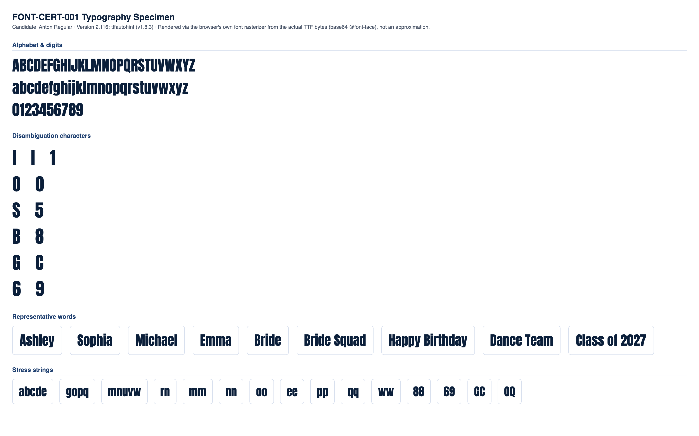

CONDITIONAL PASS
Classification and the feedback below are computed at the mid-range letter height for each stone size (the representative case). Full min/mid/max data is shown in section 4.
No blocking issues found.
Min and max height produce no more collisions or low-stone-count findings than mid height.
Medium
No blocking production failures, but 14 refinement note(s) were found (12 actionable item(s) below) -- readability, spacing, or anatomy concerns that would need addressing for production quality.
| Status | Check | Category | Detail |
|---|---|---|---|
| PASS | Successful TTF parsing | parsing | opentype.js parsed the file without error. |
| PASS | Outline format | structure | TrueType (quadratic) outlines. sfnt signature "0x00010000", opentype.js outlinesFormat="truetype". |
| PASS | Quadratic TrueType outlines | structure | TrueType file with quadratic curves confirmed: 63 curve commands found across 10 sampled glyphs. |
| PASS | unitsPerEm | structure | unitsPerEm = 2048 |
| PASS | Glyph count | structure | 1373 glyphs (font.numGlyphs=1373). |
| PASS | .notdef at glyph index 0 | structure | .notdef confirmed at glyph index 0. |
| PASS | Unicode cmap coverage | coverage | cmap maps 978 Unicode code point(s) to glyphs. |
| PASS | Required character coverage (A-Z, a-z, 0-9, space, . , ' - ! ?) | coverage | All 69 required characters map to a real glyph (glyph index != 0). |
| PASS | Required sfnt tables | structure | All required tables present: cmap, glyf, head, hhea, hmtx, loca, maxp, name, post, OS/2. |
| PASS | Family / subfamily / version / PostScript naming | naming | family="Anton", subfamily="Regular", version="Version 2.116; ttfautohint (v1.8.3)", postScriptName="Anton-Regular". |
| PASS | Ascender, descender, line gap, horizontal metrics | metrics | ascender=2409, descender=-674, hhea.lineGap=0, advanceWidthMax=3031, numberOfHMetrics=1373 (hmtx table present: true). |
| PASS | Invalid or empty glyphs | geometry | No mapped, non-whitespace, non-invisible-by-design character resolves to an empty outline. |
| PASS | Open contours | geometry | Every required-character contour closes explicitly (an explicit "Z"/closepath command) or implicitly (its final point returns to its starting point). |
| PASS | Self-intersections | geometry | Strict transversal-crossing test (deduplicated, 16-segments-per-curve flattened outline, 69 required characters) found no self- or cross-contour crossings. |
| WARNING | Zero-length or duplicate outline segments | geometry | 40 of 69 character(s) contain 295 raw zero-length draw command(s) total (a command whose endpoint exactly duplicates the current pen position -- draws nothing, harmless no-op, but real source-file redundancy), 0 duplicate outline segments. Not production-blocking: these commands have no visual or geometric effect. Per-character counts: "B" (zero-length:9, duplicate:0), "C" (zero-length:8, duplicate:0), "D" (zero-length:4, duplicate:0), "G" (zero-length:8, duplicate:0), "J" (zero-length:4, duplicate:0), "O" (zero-length:8, duplicate:0), "P" (zero-length:4, duplicate:0), "Q" (zero-length:9, duplicate:0), +32 more. |
| PASS | Coordinates outside valid TrueType ranges | geometry | All required-character outline coordinates fall within the signed 16-bit range (-32768 to 32767). |
| PASS | Inconsistent or suspicious advance widths / side bearings | metrics | Advance widths for required characters cluster reasonably around the median (991 units). |
Rendered from the actual source TTF via a base64-embedded @font-face rule (typography), and through the real production pipeline FontManager → OpenTypeProvider → GeometryEngine.generateTextLayout() → StoneLayout (rhinestone), at this milestone's own physical letter-height range per stone size:
| Stone size | Min | Mid (representative) | Max |
|---|---|---|---|
| SS6 | 35mm | 42.5mm | 50mm |
| SS10 | 45mm | 52.5mm | 60mm |
| SS16 | 65mm | 77.5mm | 90mm |
| SS20 | 80mm | 95mm | 110mm |
| SS30 | 106mm | 108.5mm | 111mm |


Successful layout generation (a non-empty StoneLayout with no collisions) is not the same as visual readability -- see each height variant's readability metrics below for objective, threshold-based findings.
| SS6 | text height: 35mm |
|---|---|
| SS10 | text height: 45mm |
| SS16 | text height: 65mm |
| SS20 | text height: 80mm |
| SS30 | text height: 106mm |
| Pair | Size | Stone counts | Chamfer distance | Result |
|---|---|---|---|---|
| "I" vs "l" | SS16 | 29 / 28 | 0.0203 | WARNING |
| "l" vs "1" | SS16 | 28 / 28 | 0.0569 | WARNING |
| "I" vs "1" | SS16 | 29 / 28 | 0.0589 | WARNING |
| "O" vs "0" | SS16 | 50 / 50 | 0.0198 | WARNING |
| "S" vs "5" | SS16 | 45 / 48 | 0.0337 | WARNING |
| "B" vs "8" | SS16 | 48 / 44 | 0.0331 | WARNING |
| "G" vs "C" | SS16 | 49 / 47 | 0.0266 | WARNING |
| "Q" vs "O" | SS16 | 52 / 50 | 0.0279 | WARNING |
| "e" vs "c" | SS16 | 44 / 43 | 0.0253 | WARNING |
| "e" vs "o" | SS16 | 44 / 43 | 0.0168 | WARNING |
| "c" vs "o" | SS16 | 43 / 43 | 0.0261 | WARNING |
| "6" vs "9" | SS16 | 48 / 47 | 0.0345 | WARNING |
Threshold: 0.09 (normalized, unit-height point clouds). Below threshold = flagged as visually similar.
| Char | SS6 | SS10 | SS16 | SS20 | SS30 |
|---|---|---|---|---|---|
| "A" | 46 | 44 | 45 | 47 | 45 |
| "B" | 49 | 47 | 48 | 50 | 50 |
| "C" | 50 | 46 | 47 | 51 | 50 |
| "D" | 51 | 49 | 51 | 54 | 54 |
| "E" | 36 | 36 | 37 | 39 | 37 |
| "F" | 34 | 33 | 34 | 35 | 35 |
| "G" | 52 | 48 | 49 | 53 | 53 |
| "H" | 53 | 51 | 50 | 53 | 55 |
| "I" | 29 | 26 | 29 | 29 | 29 |
| "J" | 39 | 37 | 39 | 41 | 40 |
| "K" | 48 | 44 | 45 | 48 | 49 |
| "L" | 32 | 33 | 31 | 33 | 33 |
| "M" | 75 | 68 | 72 | 77 | 76 |
| "N" | 49 | 45 | 44 | 51 | 49 |
| "O" | 52 | 48 | 50 | 53 | 51 |
| "P" | 40 | 39 | 39 | 42 | 41 |
| "Q" | 54 | 49 | 52 | 54 | 53 |
| "R" | 49 | 49 | 50 | 53 | 51 |
| "S" | 49 | 42 | 45 | 47 | 45 |
| "T" | 33 | 31 | 32 | 32 | 32 |
| "U" | 55 | 50 | 53 | 56 | 54 |
| "V" | 45 | 41 | 43 | 47 | 46 |
| "W" | 68 | 63 | 61 | 66 | 67 |
| "X" | 46 | 43 | 44 | 47 | 46 |
| "Y" | 36 | 35 | 35 | 38 | 37 |
| "Z" | 38 | 36 | 36 | 40 | 38 |
| "a" | 46 | 39 | 44 | 44 | 45 |
| "b" | 51 | 49 | 48 | 52 | 51 |
| "c" | 45 | 41 | 43 | 44 | 45 |
| "d" | 52 | 46 | 51 | 52 | 52 |
| "e" | 43 | 42 | 44 | 45 | 45 |
| "f" | 28 | 26 | 27 | 28 | 29 |
| "g" | 53 | 51 | 51 | 55 | 52 |
| "h" | 53 | 49 | 50 | 53 | 53 |
| "i" | 30 | 29 | 29 | 32 | 31 |
| "j" | 34 | 32 | 32 | 35 | 34 |
| "k" | 47 | 43 | 43 | 46 | 45 |
| "l" | 28 | 28 | 28 | 30 | 29 |
| "m" | 72 | 67 | 70 | 75 | 74 |
| "n" | 50 | 46 | 48 | 50 | 50 |
| "o" | 45 | 42 | 43 | 46 | 46 |
| "p" | 51 | 49 | 47 | 53 | 50 |
| "q" | 51 | 50 | 50 | 52 | 51 |
| "r" | 27 | 25 | 27 | 28 | 27 |
| "s" | 43 | 37 | 40 | 42 | 39 |
| "t" | 28 | 26 | 27 | 29 | 28 |
| "u" | 49 | 45 | 47 | 52 | 50 |
| "v" | 39 | 35 | 36 | 38 | 38 |
| "w" | 57 | 50 | 53 | 55 | 56 |
| "x" | 38 | 35 | 36 | 38 | 35 |
| "y" | 43 | 41 | 45 | 45 | 45 |
| "z" | 33 | 33 | 33 | 34 | 35 |
| "0" | 53 | 49 | 50 | 53 | 53 |
| "1" | 30 | 30 | 28 | 30 | 30 |
| "2" | 49 | 44 | 46 | 49 | 49 |
| "3" | 47 | 43 | 44 | 47 | 45 |
| "4" | 43 | 41 | 40 | 46 | 46 |
| "5" | 52 | 47 | 48 | 52 | 49 |
| "6" | 51 | 46 | 48 | 49 | 49 |
| "7" | 36 | 34 | 37 | 37 | 38 |
| "8" | 48 | 44 | 44 | 47 | 47 |
| "9" | 51 | 46 | 47 | 50 | 49 |
Cell values are stone count per glyph at that stone size ("coll." = colliding stone pairs found).
| Word | SS6 | SS10 | SS16 | SS20 | SS30 |
|---|---|---|---|---|---|
| Ashley | 256 stones, min spacing 2.01mm, 6 cluster(s) | 235 stones, min spacing 2.82mm, 6 cluster(s) | 248 stones, min spacing 4.02mm, 6 cluster(s) | 259 stones, min spacing 4.79mm, 8 cluster(s) | 253 stones, min spacing 6.43mm, 11 cluster(s) |
| Sophia | 269 stones, min spacing 2.01mm, 2 cluster(s) | 245 stones, min spacing 2.81mm, 2 cluster(s) | 253 stones, min spacing 4.07mm, 4 cluster(s) | 273 stones, min spacing 4.75mm, 4 cluster(s) | 265 stones, min spacing 6.44mm, 5 cluster(s) |
| Michael | 318 stones, min spacing 2.00mm, 6 cluster(s) | 291 stones, min spacing 2.80mm, 5 cluster(s) | 309 stones, min spacing 4.01mm, 9 cluster(s) | 323 stones, min spacing 4.70mm, 7 cluster(s) | 322 stones, min spacing 6.44mm, 8 cluster(s) |
| Emma | 224 stones, min spacing 2.01mm, 2 cluster(s) | 206 stones, min spacing 2.84mm, 1 cluster(s) | 219 stones, min spacing 4.04mm, 2 cluster(s) | 229 stones, min spacing 4.81mm, 4 cluster(s) | 230 stones, min spacing 6.43mm, 4 cluster(s) |
| Bride | 199 stones, min spacing 2.00mm, 6 cluster(s) | 185 stones, min spacing 2.82mm, 7 cluster(s) | 191 stones, min spacing 4.01mm, 3 cluster(s) | 204 stones, min spacing 4.73mm, 5 cluster(s) | 201 stones, min spacing 6.43mm, 8 cluster(s) |
| Bride Squad | 445 stones, min spacing 2.00mm, 8 cluster(s) | 402 stones, min spacing 2.81mm, 10 cluster(s) | 423 stones, min spacing 4.01mm, 5 cluster(s) | 447 stones, min spacing 4.73mm, 8 cluster(s) | 441 stones, min spacing 6.43mm, 12 cluster(s) |
| Happy Birthday | 567 stones, min spacing 2.00mm, 10 cluster(s) | 521 stones, min spacing 2.81mm, 10 cluster(s) | 548 stones, min spacing 4.00mm, 11 cluster(s) | 573 stones, min spacing 4.75mm, 20 cluster(s) | 568 stones, min spacing 6.43mm, 18 cluster(s) |
| Dance Team | 426 stones, min spacing 2.00mm, 5 cluster(s) | 393 stones, min spacing 2.82mm, 7 cluster(s) | 413 stones, min spacing 4.03mm, 5 cluster(s) | 430 stones, min spacing 4.75mm, 10 cluster(s) | 428 stones, min spacing 6.42mm, 7 cluster(s) |
| Class of 2027 | 455 stones, min spacing 2.01mm, 5 cluster(s) | 411 stones, min spacing 2.80mm, 8 cluster(s) | 430 stones, min spacing 4.02mm, 6 cluster(s) | 457 stones, min spacing 4.70mm, 15 cluster(s) | 448 stones, min spacing 6.42mm, 9 cluster(s) |
No glyph/size combination falls below the minimum meaningful stone count.
No counter-bearing glyph/size combination falls below the counter-bearing stone-count floor.
| Pair | Size | Chamfer distance | Stone counts |
|---|---|---|---|
| "I" vs "l" | SS6 | 0.0203 | 29 / 28 |
| "l" vs "1" | SS6 | 0.0567 | 28 / 30 |
| "I" vs "1" | SS6 | 0.0571 | 29 / 30 |
| "O" vs "0" | SS6 | 0.0191 | 52 / 53 |
| "S" vs "5" | SS6 | 0.0344 | 49 / 52 |
| "B" vs "8" | SS6 | 0.0331 | 49 / 48 |
| "G" vs "C" | SS6 | 0.0257 | 52 / 50 |
| "Q" vs "O" | SS6 | 0.0282 | 54 / 52 |
| "e" vs "c" | SS6 | 0.0242 | 43 / 45 |
| "e" vs "o" | SS6 | 0.0179 | 43 / 45 |
| "c" vs "o" | SS6 | 0.0237 | 45 / 45 |
| "6" vs "9" | SS6 | 0.0298 | 51 / 51 |
| "I" vs "l" | SS10 | 0.0211 | 26 / 28 |
| "l" vs "1" | SS10 | 0.0576 | 28 / 30 |
| "I" vs "1" | SS10 | 0.0609 | 26 / 30 |
| "O" vs "0" | SS10 | 0.0194 | 48 / 49 |
| "S" vs "5" | SS10 | 0.0320 | 42 / 47 |
| "B" vs "8" | SS10 | 0.0338 | 47 / 44 |
| "G" vs "C" | SS10 | 0.0269 | 48 / 46 |
| "Q" vs "O" | SS10 | 0.0290 | 49 / 48 |
| "e" vs "c" | SS10 | 0.0270 | 42 / 41 |
| "e" vs "o" | SS10 | 0.0209 | 42 / 42 |
| "c" vs "o" | SS10 | 0.0200 | 41 / 42 |
| "6" vs "9" | SS10 | 0.0249 | 46 / 46 |
| "I" vs "l" | SS16 | 0.0203 | 29 / 28 |
| "l" vs "1" | SS16 | 0.0569 | 28 / 28 |
| "I" vs "1" | SS16 | 0.0589 | 29 / 28 |
| "O" vs "0" | SS16 | 0.0198 | 50 / 50 |
| "S" vs "5" | SS16 | 0.0337 | 45 / 48 |
| "B" vs "8" | SS16 | 0.0331 | 48 / 44 |
| "G" vs "C" | SS16 | 0.0266 | 49 / 47 |
| "Q" vs "O" | SS16 | 0.0279 | 52 / 50 |
| "e" vs "c" | SS16 | 0.0253 | 44 / 43 |
| "e" vs "o" | SS16 | 0.0168 | 44 / 43 |
| "c" vs "o" | SS16 | 0.0261 | 43 / 43 |
| "6" vs "9" | SS16 | 0.0345 | 48 / 47 |
| "I" vs "l" | SS20 | 0.0201 | 29 / 30 |
| "l" vs "1" | SS20 | 0.0592 | 30 / 30 |
| "I" vs "1" | SS20 | 0.0574 | 29 / 30 |
| "O" vs "0" | SS20 | 0.0195 | 53 / 53 |
| "S" vs "5" | SS20 | 0.0354 | 47 / 52 |
| "B" vs "8" | SS20 | 0.0349 | 50 / 47 |
| "G" vs "C" | SS20 | 0.0223 | 53 / 51 |
| "Q" vs "O" | SS20 | 0.0297 | 54 / 53 |
| "e" vs "c" | SS20 | 0.0234 | 45 / 44 |
| "e" vs "o" | SS20 | 0.0222 | 45 / 46 |
| "c" vs "o" | SS20 | 0.0249 | 44 / 46 |
| "6" vs "9" | SS20 | 0.0265 | 49 / 50 |
| "I" vs "l" | SS30 | 0.0206 | 29 / 29 |
| "l" vs "1" | SS30 | 0.0595 | 29 / 30 |
| "I" vs "1" | SS30 | 0.0602 | 29 / 30 |
| "O" vs "0" | SS30 | 0.0198 | 51 / 53 |
| "S" vs "5" | SS30 | 0.0389 | 45 / 49 |
| "B" vs "8" | SS30 | 0.0347 | 50 / 47 |
| "G" vs "C" | SS30 | 0.0245 | 53 / 50 |
| "Q" vs "O" | SS30 | 0.0296 | 53 / 51 |
| "e" vs "c" | SS30 | 0.0224 | 45 / 45 |
| "e" vs "o" | SS30 | 0.0210 | 45 / 46 |
| "c" vs "o" | SS30 | 0.0245 | 45 / 46 |
| "6" vs "9" | SS30 | 0.0226 | 49 / 49 |
| Size | Diameter | Scale | Rendered stone size | Result |
|---|---|---|---|---|
| SS6 | 2mm | 5px/mm | 10px | PASS |
| SS10 | 2.8mm | 4px/mm | 11.2px | PASS |
| SS16 | 4mm | 3.5px/mm | 14px | PASS |
| SS20 | 4.7mm | 3px/mm | 14.1px | PASS |
| SS30 | 6.4mm | 2.5px/mm | 16px | PASS |
| SS6 | text height: 42.5mm |
|---|---|
| SS10 | text height: 52.5mm |
| SS16 | text height: 77.5mm |
| SS20 | text height: 95mm |
| SS30 | text height: 108.5mm |
| Pair | Size | Stone counts | Chamfer distance | Result |
|---|---|---|---|---|
| "I" vs "l" | SS16 | 35 / 34 | 0.0203 | WARNING |
| "l" vs "1" | SS16 | 34 / 35 | 0.0540 | WARNING |
| "I" vs "1" | SS16 | 35 / 35 | 0.0572 | WARNING |
| "O" vs "0" | SS16 | 59 / 60 | 0.0182 | WARNING |
| "S" vs "5" | SS16 | 56 / 59 | 0.0342 | WARNING |
| "B" vs "8" | SS16 | 57 / 54 | 0.0283 | WARNING |
| "G" vs "C" | SS16 | 62 / 59 | 0.0235 | WARNING |
| "Q" vs "O" | SS16 | 62 / 59 | 0.0306 | WARNING |
| "e" vs "c" | SS16 | 51 / 51 | 0.0255 | WARNING |
| "e" vs "o" | SS16 | 51 / 52 | 0.0173 | WARNING |
| "c" vs "o" | SS16 | 51 / 52 | 0.0207 | WARNING |
| "6" vs "9" | SS16 | 60 / 60 | 0.0294 | WARNING |
Threshold: 0.09 (normalized, unit-height point clouds). Below threshold = flagged as visually similar.
| Char | SS6 | SS10 | SS16 | SS20 | SS30 |
|---|---|---|---|---|---|
| "A" | 60 | 52 | 54 | 57 | 49 |
| "B" | 61 | 57 | 57 | 62 | 52 |
| "C" | 61 | 56 | 59 | 60 | 51 |
| "D" | 64 | 58 | 62 | 65 | 55 |
| "E" | 53 | 43 | 46 | 48 | 40 |
| "F" | 42 | 41 | 40 | 42 | 37 |
| "G" | 63 | 58 | 62 | 65 | 52 |
| "H" | 67 | 59 | 61 | 66 | 55 |
| "I" | 38 | 31 | 35 | 36 | 30 |
| "J" | 52 | 45 | 47 | 50 | 41 |
| "K" | 61 | 56 | 57 | 61 | 49 |
| "L" | 40 | 37 | 38 | 41 | 34 |
| "M" | 99 | 86 | 92 | 97 | 78 |
| "N" | 62 | 53 | 59 | 61 | 49 |
| "O" | 63 | 58 | 59 | 62 | 53 |
| "P" | 52 | 44 | 50 | 51 | 42 |
| "Q" | 66 | 59 | 62 | 64 | 54 |
| "R" | 66 | 58 | 59 | 66 | 53 |
| "S" | 60 | 53 | 56 | 57 | 50 |
| "T" | 43 | 36 | 38 | 40 | 35 |
| "U" | 66 | 59 | 63 | 68 | 56 |
| "V" | 58 | 50 | 54 | 57 | 47 |
| "W" | 88 | 74 | 80 | 84 | 67 |
| "X" | 57 | 51 | 54 | 58 | 48 |
| "Y" | 45 | 40 | 44 | 47 | 38 |
| "Z" | 46 | 42 | 46 | 49 | 40 |
| "a" | 59 | 50 | 52 | 55 | 46 |
| "b" | 63 | 56 | 58 | 62 | 51 |
| "c" | 56 | 47 | 51 | 55 | 45 |
| "d" | 64 | 56 | 60 | 63 | 53 |
| "e" | 56 | 49 | 51 | 56 | 46 |
| "f" | 34 | 31 | 33 | 35 | 29 |
| "g" | 66 | 58 | 63 | 66 | 56 |
| "h" | 64 | 58 | 63 | 64 | 54 |
| "i" | 37 | 35 | 37 | 40 | 33 |
| "j" | 42 | 38 | 40 | 44 | 36 |
| "k" | 59 | 50 | 54 | 58 | 46 |
| "l" | 35 | 33 | 34 | 36 | 30 |
| "m" | 90 | 83 | 86 | 90 | 77 |
| "n" | 61 | 55 | 58 | 61 | 52 |
| "o" | 56 | 50 | 52 | 55 | 46 |
| "p" | 66 | 56 | 59 | 62 | 52 |
| "q" | 65 | 58 | 58 | 64 | 53 |
| "r" | 35 | 31 | 33 | 34 | 31 |
| "s" | 54 | 49 | 50 | 52 | 44 |
| "t" | 35 | 31 | 33 | 36 | 29 |
| "u" | 60 | 57 | 58 | 62 | 50 |
| "v" | 47 | 44 | 46 | 48 | 39 |
| "w" | 72 | 64 | 66 | 71 | 56 |
| "x" | 49 | 42 | 44 | 48 | 37 |
| "y" | 53 | 49 | 52 | 56 | 47 |
| "z" | 42 | 38 | 40 | 43 | 35 |
| "0" | 64 | 59 | 60 | 64 | 54 |
| "1" | 37 | 34 | 35 | 37 | 32 |
| "2" | 59 | 53 | 56 | 59 | 49 |
| "3" | 59 | 51 | 54 | 58 | 47 |
| "4" | 53 | 48 | 52 | 57 | 46 |
| "5" | 64 | 58 | 59 | 61 | 51 |
| "6" | 62 | 55 | 60 | 61 | 50 |
| "7" | 44 | 40 | 43 | 45 | 40 |
| "8" | 60 | 56 | 54 | 58 | 48 |
| "9" | 62 | 57 | 60 | 61 | 51 |
Cell values are stone count per glyph at that stone size ("coll." = colliding stone pairs found).
| Word | SS6 | SS10 | SS16 | SS20 | SS30 |
|---|---|---|---|---|---|
| Ashley | 322 stones, min spacing 2.02mm, 11 cluster(s) | 290 stones, min spacing 2.80mm, 7 cluster(s) | 304 stones, min spacing 4.00mm, 6 cluster(s) | 321 stones, min spacing 4.81mm, 10 cluster(s) | 269 stones, min spacing 6.40mm, 6 cluster(s) |
| Sophia | 342 stones, min spacing 2.06mm, 7 cluster(s) | 300 stones, min spacing 2.81mm, 3 cluster(s) | 319 stones, min spacing 4.01mm, 6 cluster(s) | 331 stones, min spacing 4.80mm, 9 cluster(s) | 277 stones, min spacing 6.41mm, 3 cluster(s) |
| Michael | 406 stones, min spacing 2.01mm, 10 cluster(s) | 358 stones, min spacing 2.81mm, 5 cluster(s) | 380 stones, min spacing 4.05mm, 9 cluster(s) | 403 stones, min spacing 4.76mm, 13 cluster(s) | 330 stones, min spacing 6.41mm, 3 cluster(s) |
| Emma | 292 stones, min spacing 2.00mm, 3 cluster(s) | 259 stones, min spacing 2.82mm, 5 cluster(s) | 270 stones, min spacing 4.05mm, 11 cluster(s) | 283 stones, min spacing 4.75mm, 12 cluster(s) | 238 stones, min spacing 6.49mm, 2 cluster(s) |
| Bride | 251 stones, min spacing 2.02mm, 10 cluster(s) | 226 stones, min spacing 2.87mm, 7 cluster(s) | 237 stones, min spacing 4.08mm, 6 cluster(s) | 253 stones, min spacing 4.78mm, 10 cluster(s) | 211 stones, min spacing 6.45mm, 4 cluster(s) |
| Bride Squad | 559 stones, min spacing 2.02mm, 12 cluster(s) | 498 stones, min spacing 2.81mm, 8 cluster(s) | 521 stones, min spacing 4.01mm, 10 cluster(s) | 554 stones, min spacing 4.77mm, 14 cluster(s) | 460 stones, min spacing 6.41mm, 9 cluster(s) |
| Happy Birthday | 717 stones, min spacing 2.01mm, 22 cluster(s) | 636 stones, min spacing 2.83mm, 13 cluster(s) | 669 stones, min spacing 4.00mm, 12 cluster(s) | 709 stones, min spacing 4.78mm, 17 cluster(s) | 586 stones, min spacing 6.41mm, 10 cluster(s) |
| Dance Team | 544 stones, min spacing 2.00mm, 7 cluster(s) | 476 stones, min spacing 2.82mm, 11 cluster(s) | 500 stones, min spacing 4.05mm, 12 cluster(s) | 533 stones, min spacing 4.72mm, 16 cluster(s) | 444 stones, min spacing 6.40mm, 6 cluster(s) |
| Class of 2027 | 575 stones, min spacing 2.00mm, 9 cluster(s) | 512 stones, min spacing 2.80mm, 8 cluster(s) | 538 stones, min spacing 4.02mm, 7 cluster(s) | 566 stones, min spacing 4.72mm, 10 cluster(s) | 467 stones, min spacing 6.40mm, 8 cluster(s) |
No glyph/size combination falls below the minimum meaningful stone count.
No counter-bearing glyph/size combination falls below the counter-bearing stone-count floor.
| Pair | Size | Chamfer distance | Stone counts |
|---|---|---|---|
| "I" vs "l" | SS6 | 0.0206 | 38 / 35 |
| "l" vs "1" | SS6 | 0.0522 | 35 / 37 |
| "I" vs "1" | SS6 | 0.0576 | 38 / 37 |
| "O" vs "0" | SS6 | 0.0174 | 63 / 64 |
| "S" vs "5" | SS6 | 0.0334 | 60 / 64 |
| "B" vs "8" | SS6 | 0.0266 | 61 / 60 |
| "G" vs "C" | SS6 | 0.0228 | 63 / 61 |
| "Q" vs "O" | SS6 | 0.0301 | 66 / 63 |
| "e" vs "c" | SS6 | 0.0236 | 56 / 56 |
| "e" vs "o" | SS6 | 0.0211 | 56 / 56 |
| "c" vs "o" | SS6 | 0.0166 | 56 / 56 |
| "6" vs "9" | SS6 | 0.0221 | 62 / 62 |
| "I" vs "l" | SS10 | 0.0207 | 31 / 33 |
| "l" vs "1" | SS10 | 0.0549 | 33 / 34 |
| "I" vs "1" | SS10 | 0.0533 | 31 / 34 |
| "O" vs "0" | SS10 | 0.0184 | 58 / 59 |
| "S" vs "5" | SS10 | 0.0334 | 53 / 58 |
| "B" vs "8" | SS10 | 0.0313 | 57 / 56 |
| "G" vs "C" | SS10 | 0.0220 | 58 / 56 |
| "Q" vs "O" | SS10 | 0.0324 | 59 / 58 |
| "e" vs "c" | SS10 | 0.0265 | 49 / 47 |
| "e" vs "o" | SS10 | 0.0202 | 49 / 50 |
| "c" vs "o" | SS10 | 0.0199 | 47 / 50 |
| "6" vs "9" | SS10 | 0.0241 | 55 / 57 |
| "I" vs "l" | SS16 | 0.0203 | 35 / 34 |
| "l" vs "1" | SS16 | 0.0540 | 34 / 35 |
| "I" vs "1" | SS16 | 0.0572 | 35 / 35 |
| "O" vs "0" | SS16 | 0.0182 | 59 / 60 |
| "S" vs "5" | SS16 | 0.0342 | 56 / 59 |
| "B" vs "8" | SS16 | 0.0283 | 57 / 54 |
| "G" vs "C" | SS16 | 0.0235 | 62 / 59 |
| "Q" vs "O" | SS16 | 0.0306 | 62 / 59 |
| "e" vs "c" | SS16 | 0.0255 | 51 / 51 |
| "e" vs "o" | SS16 | 0.0173 | 51 / 52 |
| "c" vs "o" | SS16 | 0.0207 | 51 / 52 |
| "6" vs "9" | SS16 | 0.0294 | 60 / 60 |
| "I" vs "l" | SS20 | 0.0202 | 36 / 36 |
| "l" vs "1" | SS20 | 0.0530 | 36 / 37 |
| "I" vs "1" | SS20 | 0.0587 | 36 / 37 |
| "O" vs "0" | SS20 | 0.0178 | 62 / 64 |
| "S" vs "5" | SS20 | 0.0330 | 57 / 61 |
| "B" vs "8" | SS20 | 0.0246 | 62 / 58 |
| "G" vs "C" | SS20 | 0.0247 | 65 / 60 |
| "Q" vs "O" | SS20 | 0.0300 | 64 / 62 |
| "e" vs "c" | SS20 | 0.0229 | 56 / 55 |
| "e" vs "o" | SS20 | 0.0173 | 56 / 55 |
| "c" vs "o" | SS20 | 0.0199 | 55 / 55 |
| "6" vs "9" | SS20 | 0.0258 | 61 / 61 |
| "I" vs "l" | SS30 | 0.0199 | 30 / 30 |
| "l" vs "1" | SS30 | 0.0581 | 30 / 32 |
| "I" vs "1" | SS30 | 0.0549 | 30 / 32 |
| "O" vs "0" | SS30 | 0.0192 | 53 / 54 |
| "S" vs "5" | SS30 | 0.0364 | 50 / 51 |
| "B" vs "8" | SS30 | 0.0345 | 52 / 48 |
| "G" vs "C" | SS30 | 0.0222 | 52 / 51 |
| "Q" vs "O" | SS30 | 0.0293 | 54 / 53 |
| "e" vs "c" | SS30 | 0.0214 | 46 / 45 |
| "e" vs "o" | SS30 | 0.0202 | 46 / 46 |
| "c" vs "o" | SS30 | 0.0190 | 45 / 46 |
| "6" vs "9" | SS30 | 0.0280 | 50 / 51 |
| Size | Diameter | Scale | Rendered stone size | Result |
|---|---|---|---|---|
| SS6 | 2mm | 5px/mm | 10px | PASS |
| SS10 | 2.8mm | 4px/mm | 11.2px | PASS |
| SS16 | 4mm | 3.5px/mm | 14px | PASS |
| SS20 | 4.7mm | 3px/mm | 14.1px | PASS |
| SS30 | 6.4mm | 2.5px/mm | 16px | PASS |
| SS6 | text height: 50mm |
|---|---|
| SS10 | text height: 60mm |
| SS16 | text height: 90mm |
| SS20 | text height: 110mm |
| SS30 | text height: 111mm |
| Pair | Size | Stone counts | Chamfer distance | Result |
|---|---|---|---|---|
| "I" vs "l" | SS16 | 40 / 40 | 0.0199 | WARNING |
| "l" vs "1" | SS16 | 40 / 45 | 0.0552 | WARNING |
| "I" vs "1" | SS16 | 40 / 45 | 0.0554 | WARNING |
| "O" vs "0" | SS16 | 71 / 73 | 0.0163 | WARNING |
| "S" vs "5" | SS16 | 68 / 70 | 0.0331 | WARNING |
| "B" vs "8" | SS16 | 69 / 69 | 0.0195 | WARNING |
| "G" vs "C" | SS16 | 75 / 68 | 0.0269 | WARNING |
| "Q" vs "O" | SS16 | 74 / 71 | 0.0264 | WARNING |
| "e" vs "c" | SS16 | 61 / 61 | 0.0238 | WARNING |
| "e" vs "o" | SS16 | 61 / 61 | 0.0181 | WARNING |
| "c" vs "o" | SS16 | 61 / 61 | 0.0163 | WARNING |
| "6" vs "9" | SS16 | 69 / 69 | 0.0261 | WARNING |
Threshold: 0.09 (normalized, unit-height point clouds). Below threshold = flagged as visually similar.
| Char | SS6 | SS10 | SS16 | SS20 | SS30 |
|---|---|---|---|---|---|
| "A" | 69 | 60 | 66 | 69 | 49 |
| "B" | 73 | 63 | 69 | 72 | 54 |
| "C" | 72 | 65 | 68 | 73 | 52 |
| "D" | 77 | 67 | 72 | 77 | 56 |
| "E" | 57 | 50 | 53 | 58 | 40 |
| "F" | 52 | 45 | 49 | 52 | 36 |
| "G" | 80 | 70 | 75 | 78 | 53 |
| "H" | 77 | 70 | 72 | 77 | 55 |
| "I" | 42 | 37 | 40 | 42 | 32 |
| "J" | 59 | 51 | 57 | 58 | 43 |
| "K" | 74 | 63 | 68 | 74 | 51 |
| "L" | 48 | 42 | 45 | 49 | 36 |
| "M" | 116 | 103 | 108 | 116 | 80 |
| "N" | 76 | 63 | 72 | 76 | 52 |
| "O" | 75 | 66 | 71 | 73 | 54 |
| "P" | 59 | 54 | 57 | 59 | 44 |
| "Q" | 78 | 69 | 74 | 76 | 55 |
| "R" | 75 | 67 | 72 | 76 | 54 |
| "S" | 71 | 63 | 68 | 70 | 50 |
| "T" | 47 | 41 | 45 | 48 | 35 |
| "U" | 79 | 70 | 75 | 79 | 57 |
| "V" | 69 | 57 | 64 | 67 | 48 |
| "W" | 101 | 88 | 95 | 102 | 69 |
| "X" | 70 | 59 | 66 | 69 | 48 |
| "Y" | 55 | 48 | 51 | 55 | 40 |
| "Z" | 59 | 48 | 53 | 57 | 41 |
| "a" | 67 | 59 | 63 | 65 | 48 |
| "b" | 75 | 67 | 69 | 75 | 56 |
| "c" | 65 | 57 | 61 | 67 | 46 |
| "d" | 76 | 66 | 68 | 74 | 54 |
| "e" | 68 | 58 | 61 | 65 | 46 |
| "f" | 41 | 36 | 39 | 43 | 30 |
| "g" | 81 | 70 | 72 | 77 | 58 |
| "h" | 78 | 68 | 73 | 78 | 57 |
| "i" | 48 | 40 | 46 | 49 | 33 |
| "j" | 53 | 44 | 50 | 54 | 36 |
| "k" | 70 | 60 | 66 | 68 | 49 |
| "l" | 43 | 38 | 40 | 42 | 31 |
| "m" | 106 | 94 | 103 | 108 | 78 |
| "n" | 73 | 63 | 68 | 72 | 53 |
| "o" | 66 | 59 | 61 | 65 | 48 |
| "p" | 76 | 66 | 70 | 75 | 54 |
| "q" | 77 | 67 | 69 | 75 | 55 |
| "r" | 43 | 36 | 41 | 40 | 30 |
| "s" | 66 | 57 | 60 | 64 | 46 |
| "t" | 43 | 37 | 40 | 43 | 30 |
| "u" | 72 | 65 | 67 | 71 | 52 |
| "v" | 56 | 51 | 54 | 56 | 40 |
| "w" | 84 | 73 | 78 | 84 | 58 |
| "x" | 55 | 48 | 52 | 58 | 40 |
| "y" | 67 | 58 | 63 | 68 | 48 |
| "z" | 51 | 44 | 48 | 51 | 36 |
| "0" | 76 | 67 | 73 | 75 | 55 |
| "1" | 48 | 39 | 45 | 45 | 34 |
| "2" | 69 | 63 | 65 | 70 | 53 |
| "3" | 70 | 62 | 66 | 72 | 48 |
| "4" | 67 | 58 | 62 | 65 | 45 |
| "5" | 77 | 67 | 70 | 75 | 52 |
| "6" | 74 | 64 | 69 | 73 | 52 |
| "7" | 53 | 47 | 50 | 53 | 40 |
| "8" | 70 | 62 | 69 | 72 | 49 |
| "9" | 75 | 65 | 69 | 73 | 51 |
Cell values are stone count per glyph at that stone size ("coll." = colliding stone pairs found).
| Word | SS6 | SS10 | SS16 | SS20 | SS30 |
|---|---|---|---|---|---|
| Ashley | 391 stones, min spacing 2.01mm, 6 cluster(s) | 339 stones, min spacing 2.81mm, 8 cluster(s) | 363 stones, min spacing 4.03mm, 9 cluster(s) | 386 stones, min spacing 4.72mm, 5 cluster(s) | 275 stones, min spacing 6.45mm, 8 cluster(s) |
| Sophia | 406 stones, min spacing 2.01mm, 5 cluster(s) | 355 stones, min spacing 2.80mm, 4 cluster(s) | 381 stones, min spacing 4.01mm, 3 cluster(s) | 402 stones, min spacing 4.71mm, 6 cluster(s) | 288 stones, min spacing 6.40mm, 6 cluster(s) |
| Michael | 485 stones, min spacing 2.01mm, 5 cluster(s) | 423 stones, min spacing 2.81mm, 6 cluster(s) | 452 stones, min spacing 4.02mm, 8 cluster(s) | 482 stones, min spacing 4.72mm, 11 cluster(s) | 338 stones, min spacing 6.40mm, 10 cluster(s) |
| Emma | 336 stones, min spacing 2.03mm, 9 cluster(s) | 297 stones, min spacing 2.81mm, 4 cluster(s) | 322 stones, min spacing 4.01mm, 9 cluster(s) | 339 stones, min spacing 4.70mm, 7 cluster(s) | 242 stones, min spacing 6.42mm, 5 cluster(s) |
| Bride | 308 stones, min spacing 2.01mm, 4 cluster(s) | 261 stones, min spacing 2.81mm, 7 cluster(s) | 281 stones, min spacing 4.03mm, 10 cluster(s) | 300 stones, min spacing 4.72mm, 10 cluster(s) | 214 stones, min spacing 6.47mm, 9 cluster(s) |
| Bride Squad | 671 stones, min spacing 2.01mm, 8 cluster(s) | 581 stones, min spacing 2.80mm, 8 cluster(s) | 616 stones, min spacing 4.01mm, 17 cluster(s) | 655 stones, min spacing 4.71mm, 20 cluster(s) | 470 stones, min spacing 6.42mm, 15 cluster(s) |
| Happy Birthday | 855 stones, min spacing 2.01mm, 18 cluster(s) | 744 stones, min spacing 2.81mm, 10 cluster(s) | 798 stones, min spacing 4.02mm, 20 cluster(s) | 846 stones, min spacing 4.71mm, 22 cluster(s) | 604 stones, min spacing 6.40mm, 24 cluster(s) |
| Dance Team | 638 stones, min spacing 2.04mm, 13 cluster(s) | 556 stones, min spacing 2.81mm, 14 cluster(s) | 597 stones, min spacing 4.01mm, 17 cluster(s) | 632 stones, min spacing 4.70mm, 12 cluster(s) | 455 stones, min spacing 6.42mm, 10 cluster(s) |
| Class of 2027 | 685 stones, min spacing 2.01mm, 13 cluster(s) | 603 stones, min spacing 2.81mm, 6 cluster(s) | 639 stones, min spacing 4.02mm, 14 cluster(s) | 679 stones, min spacing 4.70mm, 10 cluster(s) | 484 stones, min spacing 6.42mm, 10 cluster(s) |
No glyph/size combination falls below the minimum meaningful stone count.
No counter-bearing glyph/size combination falls below the counter-bearing stone-count floor.
| Pair | Size | Chamfer distance | Stone counts |
|---|---|---|---|
| "I" vs "l" | SS6 | 0.0198 | 42 / 43 |
| "l" vs "1" | SS6 | 0.0538 | 43 / 48 |
| "I" vs "1" | SS6 | 0.0547 | 42 / 48 |
| "O" vs "0" | SS6 | 0.0155 | 75 / 76 |
| "S" vs "5" | SS6 | 0.0316 | 71 / 77 |
| "B" vs "8" | SS6 | 0.0194 | 73 / 70 |
| "G" vs "C" | SS6 | 0.0243 | 80 / 72 |
| "Q" vs "O" | SS6 | 0.0269 | 78 / 75 |
| "e" vs "c" | SS6 | 0.0222 | 68 / 65 |
| "e" vs "o" | SS6 | 0.0153 | 68 / 66 |
| "c" vs "o" | SS6 | 0.0164 | 65 / 66 |
| "6" vs "9" | SS6 | 0.0221 | 74 / 75 |
| "I" vs "l" | SS10 | 0.0205 | 37 / 38 |
| "l" vs "1" | SS10 | 0.0540 | 38 / 39 |
| "I" vs "1" | SS10 | 0.0571 | 37 / 39 |
| "O" vs "0" | SS10 | 0.0168 | 66 / 67 |
| "S" vs "5" | SS10 | 0.0304 | 63 / 67 |
| "B" vs "8" | SS10 | 0.0236 | 63 / 62 |
| "G" vs "C" | SS10 | 0.0249 | 70 / 65 |
| "Q" vs "O" | SS10 | 0.0291 | 69 / 66 |
| "e" vs "c" | SS10 | 0.0205 | 58 / 57 |
| "e" vs "o" | SS10 | 0.0163 | 58 / 59 |
| "c" vs "o" | SS10 | 0.0179 | 57 / 59 |
| "6" vs "9" | SS10 | 0.0298 | 64 / 65 |
| "I" vs "l" | SS16 | 0.0199 | 40 / 40 |
| "l" vs "1" | SS16 | 0.0552 | 40 / 45 |
| "I" vs "1" | SS16 | 0.0554 | 40 / 45 |
| "O" vs "0" | SS16 | 0.0163 | 71 / 73 |
| "S" vs "5" | SS16 | 0.0331 | 68 / 70 |
| "B" vs "8" | SS16 | 0.0195 | 69 / 69 |
| "G" vs "C" | SS16 | 0.0269 | 75 / 68 |
| "Q" vs "O" | SS16 | 0.0264 | 74 / 71 |
| "e" vs "c" | SS16 | 0.0238 | 61 / 61 |
| "e" vs "o" | SS16 | 0.0181 | 61 / 61 |
| "c" vs "o" | SS16 | 0.0163 | 61 / 61 |
| "6" vs "9" | SS16 | 0.0261 | 69 / 69 |
| "I" vs "l" | SS20 | 0.0194 | 42 / 42 |
| "l" vs "1" | SS20 | 0.0540 | 42 / 45 |
| "I" vs "1" | SS20 | 0.0559 | 42 / 45 |
| "O" vs "0" | SS20 | 0.0160 | 73 / 75 |
| "S" vs "5" | SS20 | 0.0321 | 70 / 75 |
| "B" vs "8" | SS20 | 0.0195 | 72 / 72 |
| "G" vs "C" | SS20 | 0.0244 | 78 / 73 |
| "Q" vs "O" | SS20 | 0.0266 | 76 / 73 |
| "e" vs "c" | SS20 | 0.0209 | 65 / 67 |
| "e" vs "o" | SS20 | 0.0177 | 65 / 65 |
| "c" vs "o" | SS20 | 0.0228 | 67 / 65 |
| "6" vs "9" | SS20 | 0.0252 | 73 / 73 |
| "I" vs "l" | SS30 | 0.0210 | 32 / 31 |
| "l" vs "1" | SS30 | 0.0575 | 31 / 34 |
| "I" vs "1" | SS30 | 0.0577 | 32 / 34 |
| "O" vs "0" | SS30 | 0.0191 | 54 / 55 |
| "S" vs "5" | SS30 | 0.0349 | 50 / 52 |
| "B" vs "8" | SS30 | 0.0333 | 54 / 49 |
| "G" vs "C" | SS30 | 0.0218 | 53 / 52 |
| "Q" vs "O" | SS30 | 0.0280 | 55 / 54 |
| "e" vs "c" | SS30 | 0.0226 | 46 / 46 |
| "e" vs "o" | SS30 | 0.0199 | 46 / 48 |
| "c" vs "o" | SS30 | 0.0225 | 46 / 48 |
| "6" vs "9" | SS30 | 0.0317 | 52 / 51 |
| Size | Diameter | Scale | Rendered stone size | Result |
|---|---|---|---|---|
| SS6 | 2mm | 5px/mm | 10px | PASS |
| SS10 | 2.8mm | 4px/mm | 11.2px | PASS |
| SS16 | 4mm | 3.5px/mm | 14px | PASS |
| SS20 | 4.7mm | 3px/mm | 14.1px | PASS |
| SS30 | 6.4mm | 2.5px/mm | 16px | PASS |
x-height measured spread: 18.0 font units across 13 letters (declared OS/2 sxHeight: 1500). Cap-height measured spread: 16.0 font units across 26 letters (declared OS/2 sCapHeight: 1760).
No visual-weight outliers found across a-z.
No baseline anomalies found across a-z.
All 5 tested word-space boundaries measure at least 1.3× the median intra-word letter gap (tightest: "Dance Team" between "e" and "T" at 4.94×) -- no word-space is flagged as reading like an ordinary letter gap.
| File size | 166.8 KB |
|---|---|
| sfnt signature | 0x00010000 |
| Outline format | truetype |
| unitsPerEm | 2048 |
| Glyph count | 1373 |
| cmap entries | 978 |
| Tables present | DSIG, GDEF, GPOS, GSUB, OS/2, cmap, cvt, fpgm, gasp, glyf, head, hhea, hmtx, loca, maxp, name, post, prep |
| Family / Subfamily | Anton / Regular |
| Version | Version 2.116; ttfautohint (v1.8.3) |
| PostScript name | Anton-Regular |
| Ascender / Descender | 2409 / -674 |
| Line gap | 0 |
| sxHeight / sCapHeight | 1500 / 1760 |
| Italic angle | 0 |
| Fixed pitch | no |
| Curve vs line commands (sample) | 63 curve / 127 line (10 glyphs) |